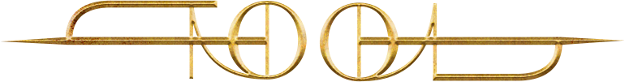
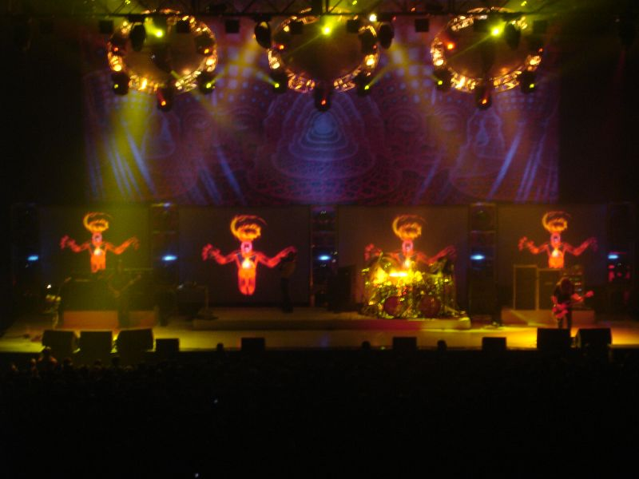
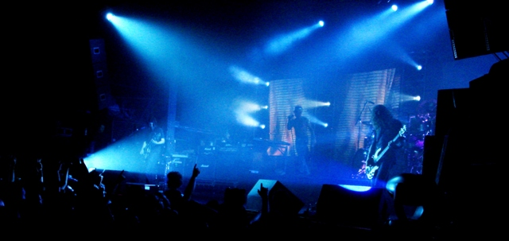
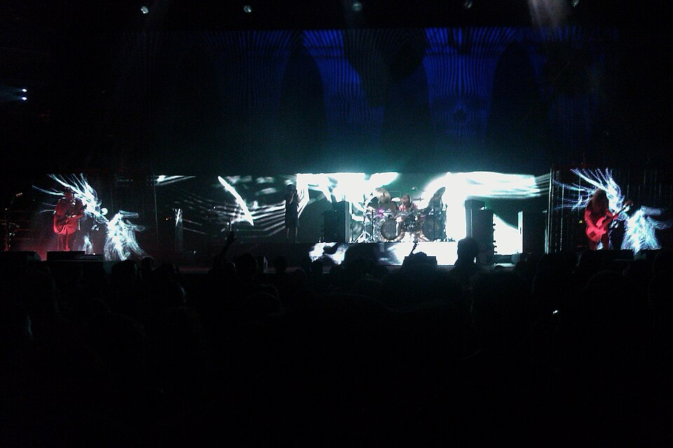
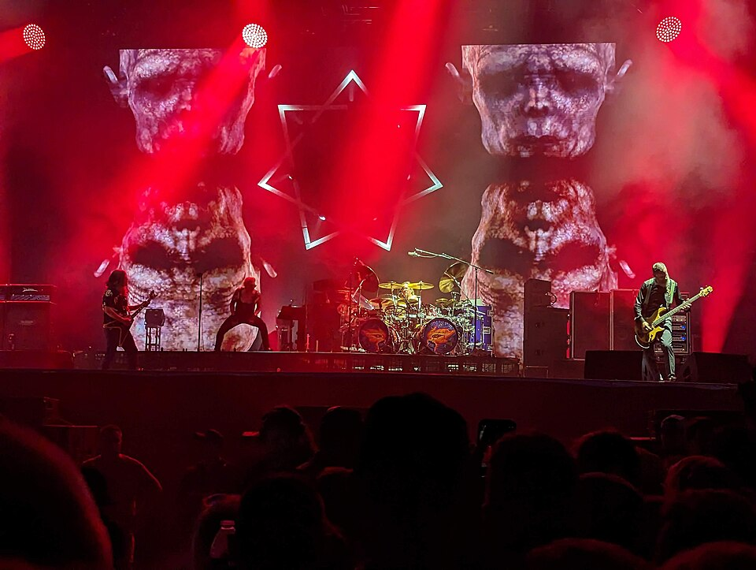
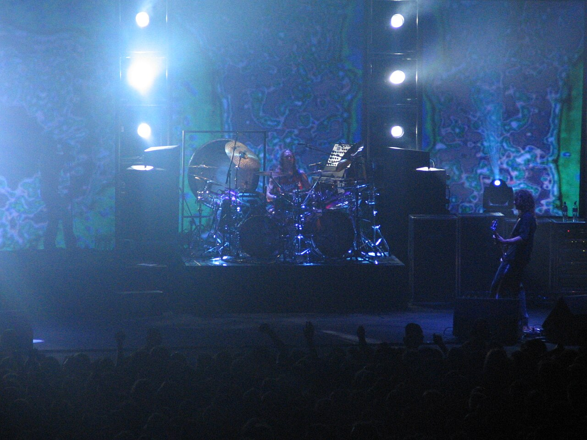

01 | Introduction to Tool

Tool, CC BY-SA 4.0, via Wikimedia Commons
Tool is a rock band known for combining heavy guitar riffs, powerful drums, unusual rhythms, and atmospheric sounds. Their music is different from a lot of mainstream rock because their songs often take time to build and explore different moods, while their music is also based on personal experiences.
I find their style interesting because the music can feel dark, intense, and almost cinematic, but always different. Tool is a good example of a band that experiments with sound instead of following the usual formula. My hope is to be able to see them live someday.

02 | The Band's History
Tool formed in Los Angeles in 1990. The band developed a distinctive style that mixed alternative metal with progressive rock and experimental music.
Over the years, Tool built a loyal following through its studio albums, live shows, and willingness to take creative risks. The current lineup includes Maynard James Keenan singing, Adam Jones on the guitar, Danny Carey on drums, and Justin Chancellor on the bass.

03 | Their Sound and Style
One of the things that makes Tool stand out is its use of changing rhythms, long instrumental sections, and layers of sound. The guitar and bass create heavy textures while the drums add complex patterns.
The band's music can feel aggressive one moment and atmospheric the next. Their lyrics often explore personal growth, human behavior, and philosophical questions. Listening with headphones can reveal details that are easy to miss at first, and it is my personal favorite way of listening.

04 | Essential Albums
Tool has released several albums that show how its music has changed over time. Here are three albums worth exploring:
10,000 Days (2006)
10,000 Days combines Tool's heavy guitar riffs and complex rhythms with emotional lyrics and atmospheric sounds. The album explores themes of loss, faith, and personal struggles, giving songs like "Wings For Marie (Pt 1)" and "Right In Two" a powerful and thought-provoking feel. It is a great example of how Tool balances heavy metal with deeper emotions and experimental music.
Lateralus (2001)
Lateralus showcases Tool's ability to mix heavy metal with progressive sounds and creative songwriting. The album features powerful instrumentals and lyrics that explore consciousness, change, and seeing the world from a different perspective. Songs like "Schism" and "Parabola" highlight the band's intense energy and unique musical style, making this album a standout for fans who enjoy music that is both heavy and thought-provoking.
Fear Inoculum (2019)
Fear Inoculum blends Tool's signature heavy riffs with atmospheric instrumentals and slower, evolving rhythms. The album explores themes of fear, patience, and personal growth, creating a sound that feels dark and immersive, using some of their lengthier songs. Songs like "Pneuma" and "Descending" showcase the band's musical complexity and ability to build tension, making this album a great example of Tool's mature and experimental sound.

05 | Why Tool Stands Out
Tool stands out because the band does not seem interested in making every song short or predictable. Its music gives listeners time to notice the rhythms, instrumental details, and changes in atmosphere.
The combination of heavy metal, experimental sounds, and striking live performances makes the band memorable. For someone who enjoys music with depth and a darker mood, Tool is worth exploring.
